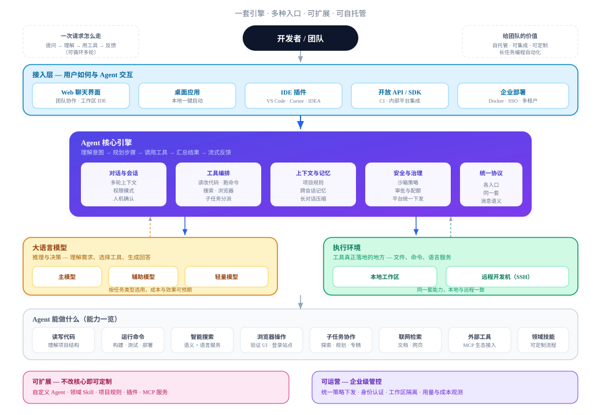

① 高层架构

②
Agent 核心循环 — 不是 Chat，是 Loop
Coding Agent 的本质：你写的循环驱动 LLM 多步决策，直到无 tool call 或达上限。
Chat vs Agent
| 普通 Chat | 一问一答，结束 |
| Coding Agent | query() 内 for (step…) 循环 |
| 停止条件 | toolCalls.length === 0 |

单步 runStep
📝sanitize消息整理 → API 格式
🤖streamText调 LLM（ai SDK）
🔧executeStreamingToolExecutor
📡wiretool_call / tool_result → UI
建造要点：循环在
src/core/query.ts · run-step.ts · turn/run-chat-turn.ts
query()，不在模型里。Transport 只调 runChatTurn()。③
工具体系 — Agent 的「手」
LLM 只选工具；真正读写文件、跑命令、开浏览器，靠 ToolDefinition + 执行器。
注册与组装（每 Turn）
defaultRegistry
tools.ts 内置工具prepareChatTurn加载 MCP / Skill
assembleToolPoolactive / deferred 分组
ToolSearchdeferred 按需激活
tools/BashTool/ BashTool.ts → definition prompt.ts → LLM schema
执行与双路结果
| 组件 | 职责 |
|---|---|
StreamingToolExecutor | 并发执行 tool calls |
result | 给 LLM 的精简字符串 |
resultBlocks | 含图片时给模型；UI 走 wire |
新增工具 =
src/tools.ts · assembleToolPool.ts
ToolDefinition + 注册；不必改 query() 主循环。④
上下文与记忆 — 脑容量管理
长任务会爆 context window；「注入规则 + 压缩历史 + 侧路记忆」三层配合。
四层分工
Project Rules
AGENTS.md 每 turn 注入 system promptAuto Memory跨会话；turn 结束抽取 + prefetch
Session Memory单会话笔记；compact 时消费
Compaction每 step 前
compactIfNeeded三档模型（静态绑定）
| 档位 | 典型用途 |
|---|---|
large | 主 query() · Plan · Compact |
medium | Memory 抽取 |
small | Explore · 标题 · prefetch |
压缩触发：
services/compact/ · turn/memory-lifecycle.ts
preTurn · /compact · turn 结束 hooks · 超长 reactive retry⑤
协议与多入口 — 引擎与 UI 解耦
先定 wire 消息形状，再写 HTTP / stdio / ACP 适配器。
三种启动模式
HTTP + SSE
npm start · Web 聊天stdio NDJSON
npm run cli · 脚本集成ACP
npm run acp · IDE 插件protocol/ 单一真相源
OutgoingMessage— stream_event · tool_call · tool_resultWireEmitter— transport 只序列化
统一 Turn 宿主
runChatTurn({
transport, // SSE | ACP | noop
runAgent, // → query()
session, cwd
})
Session: JSONL · tryBeginTurn()
同 session 禁止并发 turn
建造顺序：query + stdio → HTTP SSE → ACP 薄适配
protocol/ · turn/run-chat-turn.ts
⑥
执行环境 — 工具在哪跑
控制面与执行面分离；本地与 SSH 远程同构。
Execution Plane
EnvironmentRegistrylocal / SSH Provider
RuntimeBroker按 workspace 管理 Worker
WorkerFS · Shell · LSP · rg
CredentialBroker运行时认证
Session 绑定工作区
session.workspace = {
environmentId: 'local' | 'ssh:host',
cwd: '/path/to/project'
}
resolveExecutionBackend(session)
→ Bash/Read/Grep 在 Worker 执行
远程：plugins 控制机加载
文件/命令在远程 Worker
统一走
execution/bootstrap.ts · worker/main.ts
ExecutionBackend，加远程不用改遍所有 Tool。⑦
扩展机制 — 不改核心也能定制
子 Agent 分工 · Skill 注入领域知识 · MCP 接外部服务。
子 Agent
🤖
Agent 工具
磁盘：
subagent_type 分发 · Explore / Plan / general-purpose磁盘：
.ai-agent/agents/*.md
Skill / Commands
📚
领域流程
.ai-agent/skills/ 按需加载.ai-agent/commands/ slash 展开
MCP / Plugins
🔌
外部生态
deferred 经 ToolSearch 激活
settings.json → mcpServersdeferred 经 ToolSearch 激活
权限
tools/AgentTool/ · assembleToolPool.ts
agent | ask | plan + specialist agentType 限制工具 allowList。⑧
工程化 — 上线前要想清楚的事
能跑通 loop 只是第一步；生产还需要安全、并发、可观测、可部署。
安全与治理
permission-modeask 只读 · plan 禁 mutating
HITLAskUserQuestion · Plan 审批
并发tryBeginTurn 互斥 · abort
沙箱sandbox · can-use-tool
可观测 & 部署
DUMP_PROMPTS=1— prompt 轨迹调试- telemetry / analytics — 用量与成本
- Docker — Web 与 Agent 分离
- SSO — JWT + workspace 锁定
client-sdk— 对外 HTTP API
落地顺序：① query+tools → ② HTTP+session → ③ compact+权限 → ④ Worker → ⑤ MCP → ⑥ 部署
deploy/README.md · client-sdk/
⑨ Browser Automation — 架构

⑩
Browser Automation — 实操 Demo
一句话驱动 · navigate → snapshot → fill → click → 验证
打开 http://localhost:5173/login，用 test@example.com / password123 登录，看是否成功
Agent 执行流程
1
browser_navigate 打开 /login → 返回 snapshot
2
browser_fill_form 填 e3 邮箱 · e5 密码
3
browser_click(e7) 点「登录」→ 页面跳转
4
读新 snapshot →
heading "欢迎回来" ✓Agent 看到的页面（snapshot）
localhost:5173/login
登录
邮箱e3
密码e5
登录e7
可能的结果
✓ 成功snapshot 出现「欢迎回来」
✗ 500network: POST /api/login
⚠ 吞错500 但 UI 无提示
localhost → isolated 零配置 · 已登录后台 → extension + 配对扩展
谢谢
Q & A · 怎么做一个 Coding Agent
详细架构文档（含源码索引）